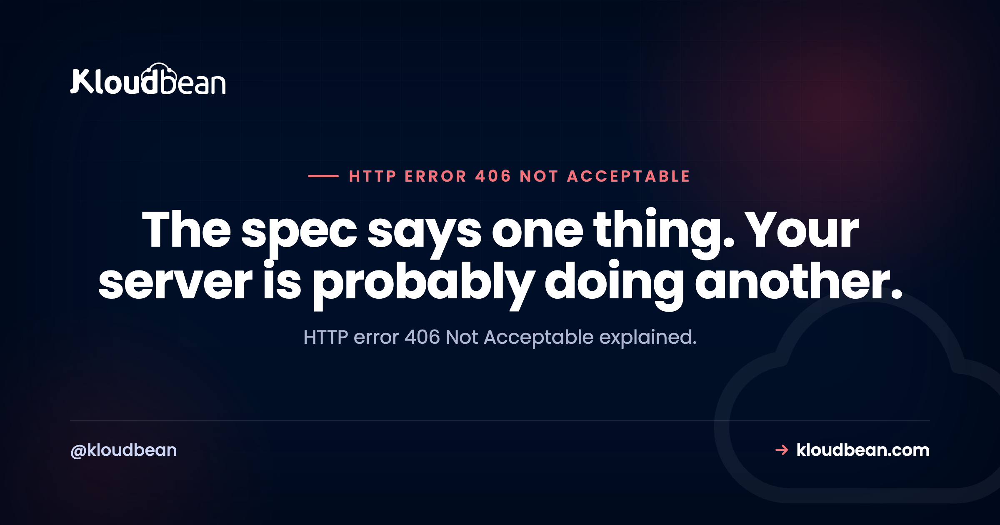

HTTP Error 406 Not Acceptable: Usually Not Content Negotiation at All

By the specification, 406 Not Acceptable means content negotiation failed: the client stated which formats it would accept, and the server cannot produce any of them. That is a real thing and it is not why most people are reading this. In practice, if you hit a 406 on a normal website, especially one on shared or cPanel-style hosting, the overwhelmingly likely explanation is that a security module decided your request looked dangerous and chose 406 as its rejection code. Same status, completely different problem, and the fix has nothing to do with headers.
First find out which kind you have. Send the request again with Accept: */*, which says you will take anything. If it succeeds, you have a genuine content negotiation problem and the fix is your Accept header or the server's supported formats. If it still fails, this is not negotiation: something is blocking the request, and on Apache-based hosting that is almost always mod_security, whose audit log will name the rule that fired. Editing your Accept header will never fix that version.
The one test that splits it
# Ask for anything at all
curl -sI -H 'Accept: */*' https://example.com/the-failing-path
# Compare against a specific type
curl -sI -H 'Accept: application/json' https://example.com/the-failing-pathAccept: */* means the client will take any format, so a correctly implemented server has no grounds to return 406. Two outcomes, and they lead somewhere completely different:
Accept: */* result | What you have | Where to look |
|---|---|---|
| Succeeds | Genuine content negotiation failure | Your Accept header, or the formats the server supports |
| Still 406 | A security rule or a framework quirk | mod_security audit log, WAF logs |
Worth doing before anything else, because the two paths share no steps. People spend afternoons adjusting Accept headers against a mod_security rule that never looks at them.
The security-rule 406, which is most of them
mod_security is a web application firewall module that inspects requests and blocks ones matching its rules. Many hosting configurations set it to respond with 406 rather than 403, which is an unfortunate choice because 406 suggests a negotiation problem and sends everyone in the wrong direction.
The signature is distinctive once you know it. The site works normally. One specific action fails, every time, and it is usually saving content. A blog post containing a code sample. A form field with an apostrophe or angle brackets. A support message that happens to mention SELECT or DROP. A theme editor save. Everything else is fine, which is why nobody suspects a firewall.
Find the rule that fired:
# The audit log names the rule and the matched data
sudo tail -100 /var/log/modsec_audit.log
# On cPanel systems it often lives here instead
sudo tail -100 /usr/local/apache/logs/modsec_audit.log
# The Apache error log usually has a matching line
sudo grep -i "ModSecurity" /var/log/apache2/error.log | tail -20You are looking for an entry with an id and a msg, which together tell you exactly which rule objected and to what. That gives you three options, in order of preference.
Change the content if the rule is right. Sometimes the rule is doing its job and your input genuinely looks like an injection attempt. Escaping code samples properly, or posting them through a mechanism designed for it, is the correct answer rather than disabling the protection.
Disable the specific rule for the specific path. The surgical fix. You keep the rest of the ruleset and remove the one false positive:
<LocationMatch "/wp-admin/post.php">
SecRuleRemoveById 942100
</LocationMatch>Ask your host. On managed hosting you often cannot edit the ruleset directly, and a support request naming the rule ID and the URL is a five-minute fix for whoever can. Give them the ID rather than describing the symptom, and you will get a much faster answer.
What not to do is turn mod_security off entirely because one rule misfires. That is the equivalent of removing a smoke alarm because it went off while you were cooking. Disable the rule, not the ruleset.
The same false-positive pattern shows up as a 403 on other configurations, which is covered in our 403 Forbidden guide. The status code differs by how the module was configured; the diagnosis is identical.
The genuine content negotiation 406
If Accept: */* worked, you have a real negotiation failure, and it is almost always an API rather than a website.
Content negotiation is the mechanism where a client says what it can handle and the server picks a matching representation. The client's side looks like this:
Accept: application/json
Accept: text/html,application/xhtml+xml,application/xml;q=0.9,*/*;q=0.8Those q values are preference weights from 0 to 1, so the second example says HTML is preferred, XML is acceptable, and anything else will do at a push. Note the */*;q=0.8 on the end, which is why browsers essentially never see a 406: they always leave a fallback open.
The failures worth knowing:
Asking for a format the API does not produce. Requesting application/xml from a JSON-only API. Read the documentation, and send application/json.
A typo in the media type. application/jsonn, or text/json where application/json is expected. The server matches literally, so a near-miss is a complete miss. Print what you actually sent rather than what you meant to:
curl -v https://api.example.com/v1/things -H 'Accept: application/json' 2>&1 | grep -i '^> accept'A versioned or vendor media type the server does not know. APIs that version through the Accept header, such as application/vnd.example.v2+json, will legitimately 406 if you name a version that does not exist. Check which versions are live.
A client library setting something you did not choose. HTTP clients and frameworks add default Accept headers, and occasionally a restrictive one. If your code never mentions Accept and you are still getting 406, something in your stack is setting it for you.
If you are building the API
A short opinion, because this is a place where being technically correct makes an API worse.
If your API only speaks JSON, returning 406 to a client that asked for XML is defensible by the specification and unhelpful in practice. That client is almost certainly a misconfigured library rather than something that genuinely needs XML, and a 406 with no explanation gives its author nothing to work with.
Two better options. Ignore Accept and return JSON, which is what a large share of successful APIs do, since the client is going to parse JSON whether or not it said so. Or return 406 and explain it, which is the more rigorous choice and costs one response body:
{
"error": "not_acceptable",
"message": "This endpoint only produces application/json.",
"supported": ["application/json"],
"received": "application/xml"
}What to avoid is a bare 406 with an empty body. It is the least useful response in the range, because the client knows only that something about its headers was wrong and not which header or what would satisfy you.
And whichever you choose, do not use 406 as a general-purpose rejection the way some firewall configurations do. If you are blocking a request for security reasons, 403 says that clearly.
About "error 606"
Worth addressing directly, because a fair number of people search for it: there is no HTTP status code 606. The 6xx range does not exist in HTTP at all. If you are looking that up, you have almost certainly seen a 406 and misread it, or copied it from somewhere that did.
So everything above applies. Start with the Accept: */* test, then either look at your mod_security audit log or at your Accept header depending on the result. If you genuinely saw a three-digit code beginning with 6, it came from an application inventing its own numbering rather than from HTTP, and its own documentation is the only place that will explain it.
| Symptom | Which 406 | First step |
|---|---|---|
| Fails only when saving certain content | Security rule false positive | mod_security audit log |
| Fails on posts containing code or SQL words | Security rule false positive | Find the rule ID |
Accept: */* succeeds | Real negotiation failure | Fix the Accept header |
| Only from one client library | Library default Accept header | Print what you actually sent |
| Started after moving hosts | New host runs a stricter ruleset | Ask the host which rule fired |
| Only on an API, with a vendor type | Unknown API version | Check live versions |
| Whole site returns 406 | Misconfigured negotiation or module | Test with Accept: */* |
Where hosting fits
This one has a genuinely clean hosting answer, and it is worth being precise rather than expansive about it.
The 406-as-a-block behaviour comes from mod_security configurations common on Apache-based shared and cPanel hosting. Kloudbean runs a different stack: nginx with Shorewall and Fail2ban for the network and intrusion-prevention layer, which are confirmed parts of the platform. So the specific failure mode where a legitimate blog post containing a code sample gets rejected with 406 by an aggressive shared ruleset is not the shape of problem you meet here.
Being straight about what that does and does not mean. It does not mean requests are never blocked, and there is no managed application firewall bundled in as a replacement for one. Cloudflare is available as a paid add-on and included for enterprise accounts, and if you enable its rules then those rules can block requests, at which point the diagnosis above still applies with the logs living at the edge. What is genuinely different is that you are not sharing a ruleset tuned for thousands of unrelated sites, and when a block does happen you have SSH access and your own logs rather than a support ticket and a guess.

Related reading
The same false-positive pattern with a different status code, 403 Forbidden. Neighbouring codes: 400 Bad Request, 401 Unauthorized, 409 Conflict, and 429 Too Many Requests. For content negotiation's caching cousin, 304 Not Modified. On WordPress security specifically, secure WordPress hosting. And for headers generally, the security headers guide.
Your own server, your own logs.
Managed nginx servers with Shorewall and Fail2ban configured, SSH access so you can read the logs yourself, free SSL, and everything in one dashboard from $8/mo. Free migration assistance included. Start at kloudbean.com.
Managed nginx · Firewall and Fail2ban configured · SSH access · Free SSL · Flat from $8/mo
FAQ
What does HTTP error 406 Not Acceptable mean?
By specification it means content negotiation failed: the client stated which formats it accepts and the server cannot produce any of them. In practice, on ordinary websites, it usually means a security module such as mod_security blocked the request and was configured to answer 406 rather than 403. Those are unrelated problems that happen to share a status code.
How do I tell which kind of 406 I have?
Send the request again with Accept: */*, which tells the server you will take any format. If it succeeds, you had a genuine negotiation failure. If it still returns 406, negotiation is not the issue and something is blocking the request, so check your mod_security audit log or your WAF logs.
Why do I get a 406 error when saving a WordPress post?
Almost certainly a mod_security rule reading your content as an attack. Code samples, SQL keywords, angle brackets, and certain punctuation all trigger false positives. Find the rule ID in the audit log, then disable that specific rule for that specific path rather than turning the whole module off.
Can I just disable mod_security to fix a 406?
You can, and it is the wrong trade. One misfiring rule does not justify removing an entire ruleset that is blocking real attacks. Identify the rule ID from the audit log and remove just that rule for the affected path, or send the ID and URL to your host if you cannot edit the configuration yourself.
Is there an HTTP error 606?
No. HTTP has no 6xx range at all, so a 606 status does not exist. People searching for it have almost always seen a 406 and misread or mis-copied it, so the guidance for 406 applies. If you genuinely saw a code starting with 6, it came from an application using its own numbering rather than from HTTP.
What is the Accept header actually for?
It tells the server which media types the client can handle, optionally with q preference weights between 0 and 1. Browsers always include a */* fallback at low priority, which is why they effectively never trigger a 406. API clients are stricter, which is where genuine negotiation failures occur.
Should my API return 406 if it only supports JSON?
It is defensible, and often unhelpful. A client asking for XML from a JSON-only API is usually a misconfigured library rather than something that needs XML. Either ignore Accept and return JSON, which many successful APIs do, or return 406 with a body naming the supported types and what you received. A bare 406 with an empty body is the least useful option.
Why did 406 errors start after I moved hosting?
Your new host probably runs a stricter or differently tuned security ruleset. The same content that saved fine before now matches a rule that was not active previously. Ask the host which rule fired for the affected URL, since they can see the audit log even where you cannot, and give them the URL and timestamp to look up.